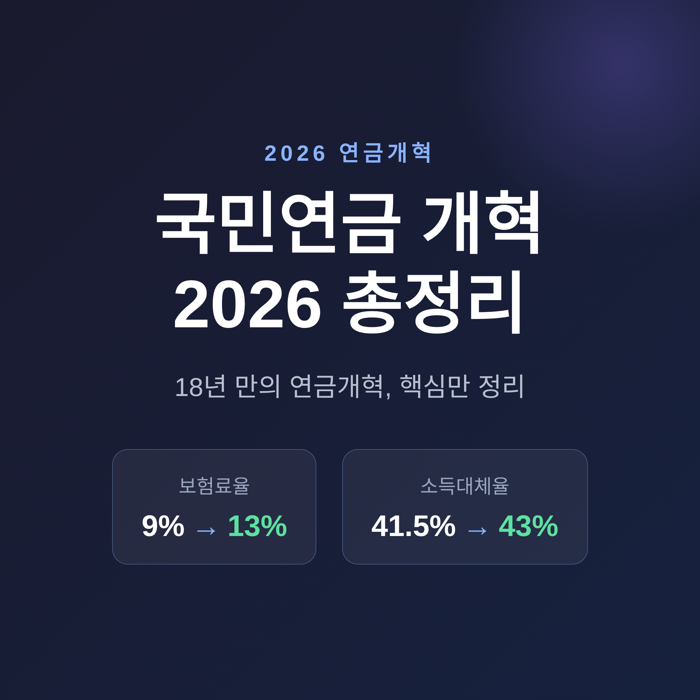
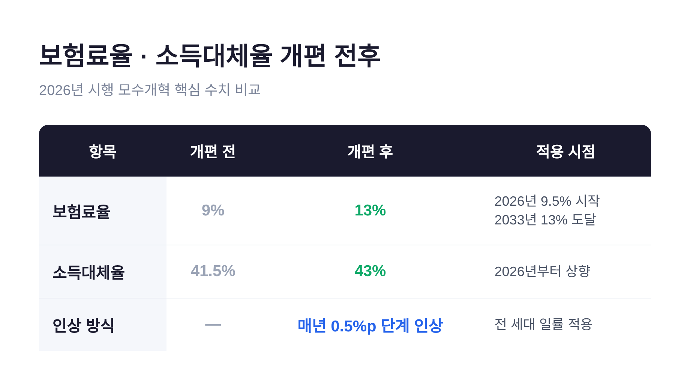
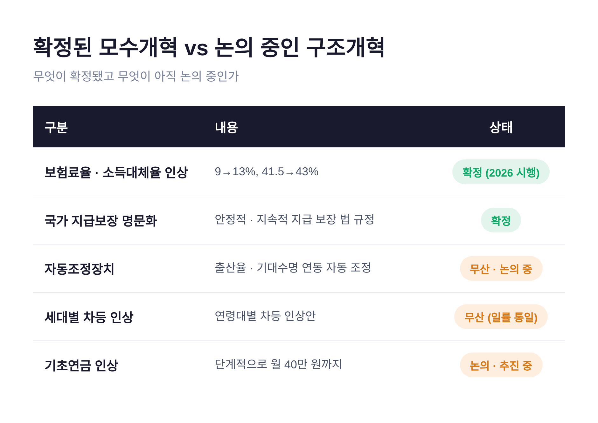

2026년부터 달라지는 국민연금 개혁의 핵심을 한자리에 정리합니다.
보험료율은 9%에서 13%로 오르고, 소득대체율은 41.5%에서 43%로 상향됩니다.
무엇이 확정됐고 무엇이 아직 논의 중인지, 그리고 내 노후는 어떻게 준비하면 좋을지 차분히 짚어 보겠습니다.
먼저 결론부터 말씀드립니다.
이번 개혁의 성격은 분명합니다. 보험료를 더 내고, 받는 연금도 더 받는 구조입니다.
보험료율은 1998년 이후 줄곧 9%로 묶여 있었습니다.
이제 2026년부터 매년 0.5%p씩 8년에 걸쳐 단계적으로 올라 2033년 13%에 도달합니다.
2026년 한 해만 보면 적용 요율은 9.5%입니다.
소득대체율은 가입기간 40년을 기준으로 생애 평균소득 대비 받게 되는 연금 비율을 뜻합니다.
원래는 2008년 50%에서 매년 0.5%p씩 낮아져 2028년 40%까지 떨어지도록 설계돼 있었습니다.
이번 개정으로 그 하락을 멈추고 43%로 끌어올려 고정했습니다.

| 항목 | 개편 전 | 개편 후 | 적용 시점 |
|---|---|---|---|
| 보험료율 | 9% | 13% | 2026년 9.5% 시작, 2033년 13% 도달 |
| 소득대체율 | 41.5% | 43% | 2026년부터 상향 |
| 인상 방식 | — | 매년 0.5%p 단계 인상 | 전 세대 일률 적용 |
체감 부담은 어느 정도일까요.
월 평균소득 309만 원을 기준으로 보면, 직장가입자는 월 약 7,700원을 더 냅니다. 절반은 회사가 부담합니다.
지역가입자는 본인이 전액을 부담하므로 월 약 15,400원이 늘어납니다.
가장 많은 분들이 궁금해하시는 대목입니다.
개혁 전 정부 재정추계는 냉정했습니다.
적립금이 2041년경 약 1,788조 원으로 정점을 찍은 뒤 적자로 돌아서고, 2055~2056년에 기금이 완전히 소진된다는 전망이었습니다.
개혁 후에는 사정이 조금 나아집니다.
보험료율과 소득대체율 조정을 적용하면 소진 시점이 2064년으로 약 8년 늦춰질 것으로 전망됩니다.
여기에 기금투자수익률을 1%p(4.5%→5.5%) 높일 경우 2071년까지 약 15년 연장될 수 있다는 시나리오도 있습니다.
최근 운용 실적은 긍정적인 신호를 줍니다.
2025년 운용수익률은 약 18.82%였고, 1988년 기금 설치 이래 누적 연평균은 약 8.04%입니다.
다만 한계도 솔직히 짚어야 합니다.
수익률은 변동성이 크기 때문에 단기 호실적이 곧 고갈 해소를 뜻하지는 않습니다.
"8년 연장"은 이번 모수개혁만의 효과이고, "15년 연장"은 수익률 개선을 가정한 시나리오라는 점도 구분해야 합니다.
즉 이번 개혁만으로 고갈을 막은 것은 아니며, 추가 구조개혁이 필요하다는 것이 다수의 견해입니다.
이번 개혁을 정확히 이해하려면 두 가지를 나눠 봐야 합니다.
숫자(모수)를 조정하는 모수개혁은 확정됐습니다.
반면 제도의 틀 자체를 바꾸는 구조개혁은 대부분 빠졌습니다.

| 구분 | 내용 | 상태 |
|---|---|---|
| 보험료율·소득대체율 인상 | 9→13%, 41.5→43% | 확정(2026 시행) |
| 국가 지급보장 명문화 | "국가는 안정적·지속적 지급을 보장" 법 규정 | 확정 |
| 자동조정장치 | 출산율·기대수명 연동 자동 조정 | 무산, 논의 중 |
| 세대별 차등 인상 | 연령대별 차등 인상안 | 무산(일률 0.5%p로 통일) |
| 기초연금 인상 | 단계적으로 월 40만 원까지 | 논의·추진 중 |
자동조정장치는 OECD 38개국 중 24개국이 운영하는 제도입니다.
이번에는 여야 합의가 이뤄지지 않아 빠졌고, 국회 연금개혁특별위원회에서 계속 논의 중입니다.
대신 국가 지급보장은 법에 명문화됐습니다.
"국가는 연금급여의 안정적·지속적 지급을 보장하여야 한다"는 취지의 규정이 새로 들어갔습니다.
보험료 인상은 2026년부터 2033년까지 단계적으로 적용됩니다.
이미 은퇴했거나 곧 은퇴할 세대는 인상 적용 기간이 짧습니다.
반대로 지금의 20~30대는 앞으로 수십 년간 더 높은 보험료를 부담하게 됩니다.
청년층의 불신도 큽니다.
한 조사에서 20대의 약 69.2%, 30대의 약 74.7%가 국민연금을 신뢰하지 않는다고 답했습니다.
"낸 만큼 받을 수 있는가"라는 물음이 그 바탕에 있습니다.
이에 대한 정부의 답이 바로 국가 지급보장 명문화입니다.
세대 형평을 위한 대안으로는 세대별 차등 적용이나 국고 투입 확대 등이 거론되지만, 아직 논의 단계입니다.
국민연금은 노후소득의 기본 토대일 뿐입니다.
소득대체율 43%도 40년 가입을 채웠을 때의 수치이고, 실제 평균 가입기간은 더 짧습니다.
그래서 사적연금으로 보완하는 다층 설계가 중요합니다.
세액공제는 사실상 확정 수익률에 가까운 혜택입니다.
연금저축은 연 600만 원, IRP를 합산하면 연 900만 원까지 세액공제 대상입니다.
공제율은 총급여 5,500만 원 이하면 16.5%, 초과하면 13.2%입니다.
900만 원을 채워 납입하면 5,500만 원 이하 근로자는 최대 약 148만 5,000원을 돌려받습니다.
일반적으로는 연금저축 600만 원을 먼저 채우고 IRP로 300만 원을 더하는 순서를 권합니다.
다만 한 가지는 꼭 기억하시길 권합니다.
중도 해지하면 그동안 받은 세액공제분을 반납하고 기타소득세 15.4%가 부과돼 원금 손실이 생길 수 있습니다.
연금은 "묶어두는 돈"이라는 전제가 필요합니다.
위 금액과 단계는 예시일 뿐, 실제는 개인의 소득과 자산, 은퇴 시점에 따라 달라집니다.
특정 상품을 권하는 것이 아니라는 점을 밝혀 둡니다.
정리하면 이렇습니다.
이번 개혁은 보험료율과 소득대체율을 함께 올린 모수개혁이고, 자동조정장치 같은 구조개혁은 아직 숙제로 남았습니다.
국민연금은 더 든든해졌지만, 그것만으로 노후가 완성되지는 않습니다.
— 국민연금은 기본, 부족분은 퇴직연금과 개인연금으로 채우는 다층 설계가 답입니다.
지금 무엇부터 시작하면 좋겠냐고 물으신다면, 가입기간을 늘리고 사적연금을 일찍 시작하는 일이라고 답하겠습니다.